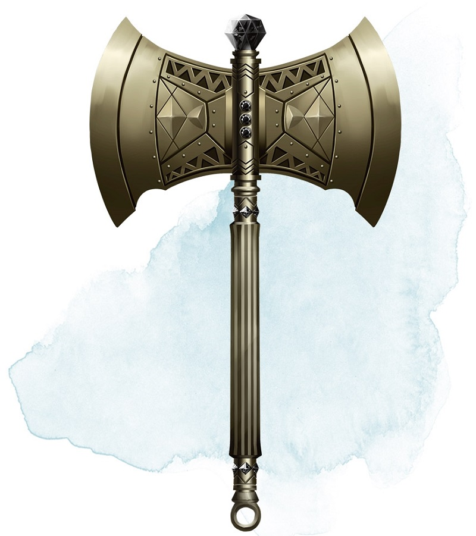

Hache du berserker
[ Berserker Axe ]
Arme (toute hache), rare (nécessite un lien)
Vous gagnez un bonus de +1 aux jets d'attaque et de dégâts effectués avec cette arme magique. De plus, tant que vous êtes lié à cette arme, votre maximum de points de vie augmente de 1 pour chaque niveau de classe que vous possédez.
Malédiction. Cette hache est maudite, et vous lier à elle revient à partager sa malédiction. Tant que vous êtes maudit, vous ne voulez pas vous séparer de la hache, la gardant à portée de main à tout instant. Vous avez également un désavantage aux jets d'attaque effectués avec d'autres armes que cette hache, à moins qu'aucun ennemi, que vous pouvez voir ou entendre, ne se trouve dans un rayon de 18 mètres autour de vous.
À chaque fois qu'une créature hostile vous inflige des dégâts alors que la hache est en votre possession, vous devez réussir un jet de sauvegarde de Sagesse DD 15 sous peine de devenir fou furieux. Tant que vous êtes fou furieux, vous devez utiliser votre action à chaque tour pour attaquer avec la hache la créature la plus proche de vous. Si vous pouvez effectuer des attaques supplémentaires avec votre action Attaquer, vous utilisez ses attaques supplémentaires, vous déplaçant pour attaquer la créature suivante la plus proche une fois que votre première cible est tombée au combat. Si vous avez plusieurs cibles potentielles, vous en attaquez une au hasard. Vous êtes fou furieux jusqu'à ce que votre tour ne commence et qu'aucune créature que vous pouvez voir ou entendre ne se trouve dans un rayon de 18 mètres autour de vous.
Malédiction. Cette hache est maudite, et vous lier à elle revient à partager sa malédiction. Tant que vous êtes maudit, vous ne voulez pas vous séparer de la hache, la gardant à portée de main à tout instant. Vous avez également un désavantage aux jets d'attaque effectués avec d'autres armes que cette hache, à moins qu'aucun ennemi, que vous pouvez voir ou entendre, ne se trouve dans un rayon de 18 mètres autour de vous.
À chaque fois qu'une créature hostile vous inflige des dégâts alors que la hache est en votre possession, vous devez réussir un jet de sauvegarde de Sagesse DD 15 sous peine de devenir fou furieux. Tant que vous êtes fou furieux, vous devez utiliser votre action à chaque tour pour attaquer avec la hache la créature la plus proche de vous. Si vous pouvez effectuer des attaques supplémentaires avec votre action Attaquer, vous utilisez ses attaques supplémentaires, vous déplaçant pour attaquer la créature suivante la plus proche une fois que votre première cible est tombée au combat. Si vous avez plusieurs cibles potentielles, vous en attaquez une au hasard. Vous êtes fou furieux jusqu'à ce que votre tour ne commence et qu'aucune créature que vous pouvez voir ou entendre ne se trouve dans un rayon de 18 mètres autour de vous.
Dungeon Master´s Guide (SRD)
